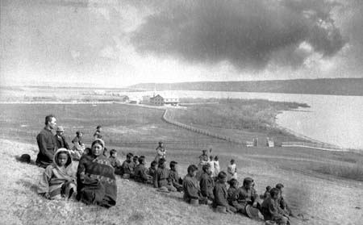
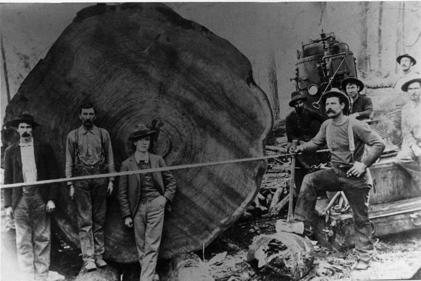
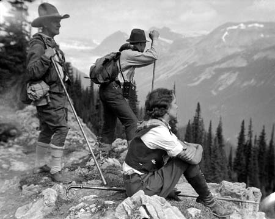
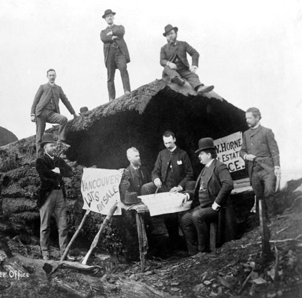

|


Vancouver History An Aboriginal settlement called Xwméthkwyiem, ("Musqueam"—from masqui "an edible grass that grows in the sea"), near the mouth of the Fraser River dates back to at least 3,000 years ago. Vancouver's ecosystem, with its abundant plant and animal life, provides a wealth of food and materials that have likely supported people for over 10,000 years. At the time of first European contact, the Musqueam and Squamish peoples had villages in the areas around present-day Vancouver. There is also evidence of a third group, the Tsleil'wauthuth, ancestors of today's Burrard Band in North Vancouver. These were Coast Salish First Nations sharing cultural traits with people in the Fraser Valley and Northern Washington. Hun'qumi'num', the downriver dialect of the Halkomelem language was the common language of the native community at Musqueam on the Fraser River on the south side of today's city. The Squamish and their kin the Tsleil-Waututh or Burrard Band, spoke a different, though related language, Skwxwú7mesh, which is similar to Sechelt (Shishalh) and also spoken at the Squamish Nation's other main population centre at the town of Squamish. The most famous member of Vancouver's native community is indubitably the late Chief Dan George of the Burrard Band.  The Native peoples of the Northwest Coast had achieved a very high level of cultural complexity for a food gathering base. As Bruce Macdonald notes in Vancouver: a visual history: "Their economic system encouraged hard work, the accumulation of wealth and status and the redistribution of wealth..." Winter villages, in what is now known as Vancouver, were comprised of large plankhouses made of Western Red Cedar wood. Gatherings called potlatches were common in the summer and winter months when the spirit powers were active. These ceremonies were an important part of the social and spiritual life of the people. The largest villages were at Homulchesan, near the mouth of the Capilano River and roughly beneath where the north foot of the present Lions Gate Bridge is today, and at Musqueam. Qwhy-qwhy in Stanley Park (Lumberman's Arch)'s village was auxiliary to its role as the ceremonial grounds for the Homulchesan Squamish across the inlet. The foundation of a Catholic mission at Mosquito Creek engendered the creation of another large community of Squamish there. Snauq, approximately where the south foot of the Burrard Bridge, was a smaller village, more of a single residence with extra buildings, but it was the residence of August Jack Kahtsahlano, forger of the joint chieftaincy of the Squamish and Musqueam and namesake of the Kitsilano neighbourhood. Spanish Captain Jose Maria Narvaez was the first European to explore the Strait of Georgia in 1791. In the following year, 1792, the British naval Captain George Vancouver (1757-1798) from King's Lynn in Norfolk joined the Spanish expedition based at Nootka Sound on Vancouver Island's west coast and further explored the Strait of Georgia, as well as the Puget Sound in the present day Seattle area. Simon Fraser was the first European to reach the area overland, descending the river which bears his name in 1808. Despite the influx of the Fraser Gold Rush in 1858-59, settlement on Burrard Inlet and English Bay was unknown prior to the early 1860s due to the power of the Squamish chiefs over the area; in later years prospectors' bodies were found occasionally on isolated beaches, apparently from failed attempts to land or settle. The first non-native settlement in the city limits of Vancouver was at McLeery's Farm, in the area of the Oak Street bridge, in about 1862.  Lumbering was the early industry along Burrard Inlet, now the site of Vancouver's seaport. The first sawmill began operating in 1863 at Moodyville (in 1915, expanded as a municipality and renamed "North Vancouver"; the name Moodyville still applies to the Lower Lonsdale district, though more as a marketing term than in common usage). The first export of lumber took place in 1865; this lumber was shipped to Australia. In 1865, the first sawmill on the south shore of Burrard Inlet, Stamp's Mill, began operations in what would later become Vancouver; this mill was originally located at Brockton Point in Stanley Park but was moved to its longtime location because of the currents and shoals at Brockton Point, which made docking difficult. The largest trees in the world grew along the south shores of False Creek and English Bay and provided (amongst other things) masts for the world's windjammer fleets and the increasingly-large vessels of the Royal Navy. One famous sale, of trees cut from the Jericho neighbourhood (west of Kitsilano), was a special order for the Celestial Emperor (i.e. of China) of a few dozen immense beams for the construction of the Great Hall of Heavenly Peace in the Forbidden City in Beijing. Millworkers and lumberers were from a wide variety of backgrounds - mostly Scandinavians and Nootkas, who were also brought to the inlet to help with the local whaling industry. At first, Squamish typically did not work in the mills. A former river pilot, John (Jack) Deighton, set up a small (24' x 12') saloon on the beach about a mile west of the sawmill in 1867. His place was popular and a well-worn trail between the mill and saloon was soon established - this is today's Alexander Street. Deighton's nickname, Gassy Jack, came about because he was known as quite the talker or "gassy". A number of men began living near the saloon and the "settlement" quickly became known as Gassy's town. In 1870, the colonial government of British Columbia took notice of the growing settlement and sent a surveyor to lay out an official townsite known as Granville. Granville was named for the British Colonial Secretary, the Earl of Granville, though everyone still called it Gassy's Town, which quickly shortened to Gastown.
 The new townsite was situated on one of the best natural harbours in the world and for this reason it was selected by the Canadian Pacific Railway as their terminus. The transcontinental railway was commissioned by the government of Canada under the leadership of Prime Minister Sir John A. MacDonald and was a condition of British Columbia joining confederation in 1871. The CPR president, William Van Horne, decided that Granville wasn't such a great name for the new terminus because of the seedy associations with Gastown, and strongly suggested "Vancouver" would be a better name in part because people in Toronto and Montreal knew where Vancouver Island was but had no idea of where Granville was. Under its new name the city was incorporated on April 6, 1886. Three months later, on June 13, a spectacular blaze destroyed most of the city along the swampy shores of Burrard Inlet in twenty-five minutes. Things recovered quickly after the fire, although celebratory Dominion Day festivities to launch the opening of the CPR were postponed a year as a result. The first regular transcontinental train from Montreal arrived at a temporary terminus at Port Moody in July 1886, and service to Vancouver itself began in May 1887. That year Vancouver's population was 5,000, by 1892 it reached 15,000 and by 1900 it was 100,000. The fire which destroyed the city was eventually considered to be beneficial, as the city was rebuilt with modern water, electricity and streetcar systems. Vancouver history courtesy of Wikipedia Edited by the AOSD Conference Committee. Send comments to: webmaster  aosd.net aosd.net |